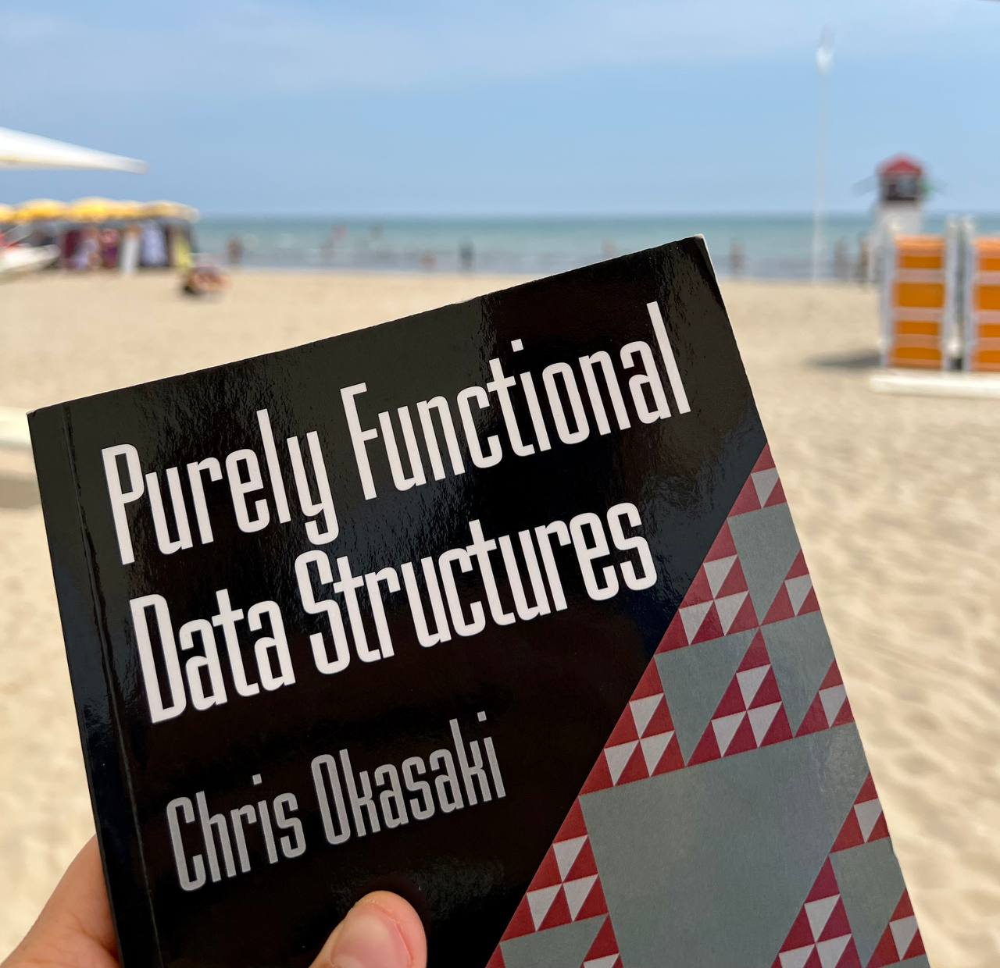

Недавно начал читать книгу Okasaki, в которой автор пытается показать, что функциональные языки не так плохи с точки зрения оптимальной реализации структур данных.
Это показалось мне довольно интересным и я решил задокументировать процесс её чтения в виде небольших постов. Каждый пост будет описывать одну или несколько структур данных и их реализацию на Haskell.
Heaps
Первое с чего мы начнем это кучи. Если вы помните, то куча это структура данных эффективно поддерживающая минимум или максимум любого заданного линейного порядка (дальше я буду использовать только минимум), позволяя при этом добавлять в себя новые элементы в любом порядке.
Единственный разрешенный способ удалить элемент из кучи это извлечение минимального элемента. С помощью type classes мы можем описать типичный интерфейс взаимодействия с кучами.
class Heap h where
empty :: Ord e => h e
push :: Ord e => h e -> e -> h e
pop :: Ord e => h e -> h e
peek :: Ord e => h e -> e